CAMPAIGN / 01
The creative future is yours
Review drafts · source imagery and development interface previews. Actual product execution and founder takes are pending.

Two campaign directions. Twelve shootable stories. A repeatable local production system with room to experiment.
Review drafts · source imagery and development interface previews. Actual product execution and founder takes are pending.
Review drafts · source imagery and development interface previews. Actual product execution and founder takes are pending.
Original and licensed media, with a saved source and rights record.
Source, actions, human revision, and the finished export. Keep an uncut master.
Result, founder, and challenge hooks over the same core story.
Check readability, claims and rights; then track outcomes by platform.
.venv/bin/python tools/queue.py --campaign all --variant baseline --size preview --mode draft
.venv/bin/python tools/build_review.pyCommands run from marketing/. Full-size drafts use --size final; public-ready rendering separately uses --mode final and requires cleared assets and verified product proof.
| Asset | License | Use status | Reference |
|---|---|---|---|
| Hong Kong skyscrapers in a night of typhoon | CC0 1.0 Universal Public Domain Dedication | internal-review | Source ↗ |
| Mountain Without Men | CC0 1.0 Universal Public Domain Dedication | internal-review | Source ↗ |
| Glass bottle (depicts an empty drinking glass) | CC0 1.0 Universal Public Domain Dedication | internal-review | Source ↗ |
| Mountain and Landscape | CC0 1.0 claim on Wikimedia Commons; unresolved source provenance | internal-review | Source ↗ |